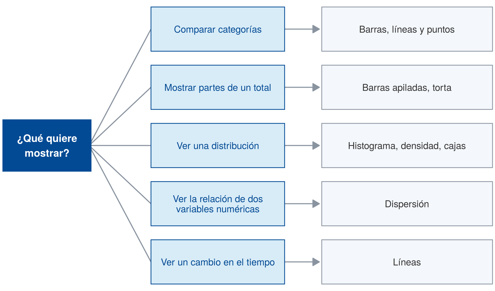
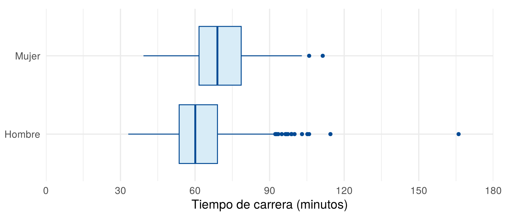

Los gráficos se pueden clasificar por su propósito o por el tipo de variable. Esta página presenta las dos clasificaciones, el árbol de decisión de From Data to Viz y los tipos de gráficos que se estudian en esta sección. La primera clasificación es la que usa From Data to Viz.
Esta página usa CarreraLuz22 y
vivienda_faltantes, del paquete
paqueteMETODOS, y el paquete ggplot2. Los
bloques de código se ejecutan en orden, porque algunos usan objetos
creados en bloques anteriores.
library(paqueteMETODOS)
data("CarreraLuz22")
data("vivienda_faltantes")library(ggplot2)From Data to Viz (Holtz y Healy) es un sitio con un árbol de decisión que lleva al gráfico apropiado según el formato de los datos. Está en inglés, y cada gráfico tiene su explicación, sus variantes y sus errores comunes. Sus ramas parten de seis tipos de datos:
| Rama del árbol | Significado | Ejemplo con los datos del curso |
|---|---|---|
| Numeric | Numéricos | Precio y área de las viviendas |
| Categoric | Categóricos | Zona y estrato |
| Num & Cat | Numéricos y categóricos | Tiempo de carrera por sexo |
| Maps | Mapas | Longitud y latitud de las viviendas |
| Time series | Series de tiempo | Inflación por año |
| Network | Redes | No se usa en este curso |
Para usar el árbol se siguen estos pasos:
From Data to Viz también agrupa los gráficos en siete familias, según lo que muestran. La siguiente tabla las resume con algunos ejemplos:
| Familia | Qué responde | Ejemplos |
|---|---|---|
| Distribución | ¿Cómo se reparten los valores? | Histograma, densidad, cajas, violín |
| Correlación | ¿Cómo se relacionan dos variables? | Dispersión, mapa de calor |
| Ranking | ¿Cuál categoría tiene más? | Barras, líneas y puntos, radar |
| Parte de un todo | ¿Cómo se reparte un total? | Torta, dona, mapa de árbol |
| Evolución | ¿Cómo cambia en el tiempo? | Líneas, área |
| Mapa | ¿Cómo cambia según el lugar? | Mapa coroplético, mapa de burbujas |
| Flujo | ¿Cómo se mueve algo entre grupos? | Sankey, diagrama de cuerdas |
Para escoger, conviene definir primero el mensaje. Si no se puede resumir en unas pocas frases, hay que replantear el gráfico (Government Analysis Function, 2022). La siguiente figura muestra la ruta para los gráficos de este curso:

Ruta para elegir un gráfico según lo que se quiere mostrar
ruta <- data.frame(
y = 5:1,
proposito = c("Comparar categorías", "Mostrar partes de un total",
"Ver una distribución", "Ver la relación de dos\nvariables numéricas",
"Ver un cambio en el tiempo"),
graficos = c("Barras, líneas y puntos", "Barras apiladas, torta",
"Histograma, densidad, cajas", "Dispersión", "Líneas")
)
ggplot(ruta) +
geom_segment(aes(x = 1.8, xend = 3.05, y = 3, yend = y), color = "#8A94A0", linewidth = 0.7) +
geom_segment(aes(x = 5.75, xend = 6.45, y = y, yend = y), color = "#8A94A0", linewidth = 0.7,
arrow = arrow(length = unit(0.14, "inches"), type = "closed")) +
annotate("rect", xmin = 0.05, xmax = 1.85, ymin = 2.55, ymax = 3.45,
fill = "#034A94", color = NA) +
annotate("text", x = 0.95, y = 3, label = "¿Qué quiere\nmostrar?", color = "white",
fontface = "bold", size = 5) +
geom_rect(aes(xmin = 3.05, xmax = 5.75, ymin = y - 0.38, ymax = y + 0.38),
fill = "#D8ECF7", color = "#034A94") +
geom_text(aes(x = 4.4, y = y, label = proposito), color = "#034A94", size = 4.6,
lineheight = 0.9) +
geom_rect(aes(xmin = 6.5, xmax = 9.95, ymin = y - 0.38, ymax = y + 0.38),
fill = "#F4F7FB", color = "#8A94A0") +
geom_text(aes(x = 8.22, y = y, label = graficos), color = "#333333", size = 4.6) +
coord_cartesian(xlim = c(0, 10), ylim = c(0.5, 5.5), expand = FALSE) +
theme_void()La Tabla 1 presenta los gráficos más usados según el
tipo de variable, con su sintaxis en la base de R y en
ggplot2.
| Tipo de variable | Gráfico | Base de R | ggplot2 |
|---|---|---|---|
| Cualitativa | Torta | pie(table(x)) |
geom_col() +
coord_polar() |
| Cualitativa | Barras | barplot(table(x)) |
geom_bar() |
| Dos cualitativas | Barras compuestas | barplot(table(x, y)) |
geom_bar(position = "dodge") |
| Cuantitativa | Tallos y hojas | stem(x) |
No tiene |
| Cuantitativa | Histograma | hist(x) |
geom_histogram() |
| Cuantitativa | Densidad | plot(density(x)) |
geom_density() |
| Cuantitativa | Cajas | boxplot(x) |
geom_boxplot() |
| Cuantitativa según una cualitativa | Cajas por grupo | boxplot(y ~ g) |
geom_boxplot() con
aes(x = g, y = y) |
| Cuantitativa según una cualitativa | Densidades por grupo | Sin función directa | geom_density() con
aes(fill = g) |
| Dos cuantitativas | Dispersión | plot(x, y) |
geom_point() |
| Cuantitativa en el tiempo | Líneas | plot(x, type = "l") |
geom_line() |
Además de estas formas, existen otras que permiten combinar variables y explorar relaciones más complejas. Los mapas representan datos geográficos mediante colores, tamaños o símbolos. El diagrama de mosaico muestra la relación entre variables categóricas con rectángulos de área proporcional a las frecuencias. El gráfico de radar usa ejes radiales para comparar perfiles. El diagrama Likert muestra la distribución de respuestas en escalas de opinión.
Para estudiar la relación entre dos variables se combinan una tabla o un indicador con un gráfico. La elección depende del tipo de las dos variables. La Tabla 2 resume cada caso y la página donde se explica:
| Dos variables | Tabla o indicador | Gráfico | Dónde se explica |
|---|---|---|---|
| Cualitativa y cualitativa | Tabla cruzada con porcentajes por fila, con
prop.table() |
Barras agrupadas o apiladas | Variables categóricas |
| Cualitativa de dos categorías, como sí o no, según grupos | Porcentaje de “sí” en cada grupo, con
tapply() |
Barras con el porcentaje, de 0 a 100 % | Variables categóricas |
| Cuantitativa según una cualitativa | Mediana, RIC, media y desviación estándar por grupo,
con tapply() o aggregate() |
Cajas o densidades por grupo | Indicadores de centro, de dispersión y Variable numérica |
| Cuantitativa y cuantitativa | En esta unidad, ninguno | Dispersión | Relaciones y cambios en el tiempo |
La relación entre dos variables cuantitativas se mide con el coeficiente de correlación, que se estudia en la Unidad 3. En esta unidad basta el gráfico de dispersión.
Cada página presenta los gráficos más usados, con su uso correcto, su interpretación y enlaces a From Data to Viz para ver más.
| Problema | Causa | Solución |
|---|---|---|
| Se escoge el gráfico antes de tener la pregunta | Se parte del gráfico y no del mensaje | Escribir primero la pregunta que se quiere responder |
| Se confunde el gráfico de barras con el histograma | Los dos usan rectángulos | Barras para categorías, histograma para una variable numérica |
| Se usa una barra para resumir muchos valores por grupo | La barra oculta la distribución del grupo | Usar un gráfico de cajas |
Indique a qué familia de From Data to Viz pertenece cada pregunta y qué gráfico usaría:
Se quiere comparar el tiempo de carrera de hombres y mujeres. Lea la página del gráfico de barras y explique por qué no conviene usar una barra por sexo. Después haga un gráfico más adecuado e interprételo.
Cada sexo tiene muchos valores de tiempo. La página advierte que, con varios valores por grupo, conviene un gráfico como el de cajas o el de violín.
carrera <- data.frame(sexo = CarreraLuz22$sex, minutos = CarreraLuz22$timerun / 60)
ggplot(carrera, aes(x = minutos, y = sexo)) +
geom_boxplot(fill = "#D8ECF7", color = "#034A94") +
scale_x_continuous(limits = c(0, 180), breaks = seq(0, 180, 30), expand = c(0, 0)) +
labs(x = "Tiempo de carrera (minutos)", y = NULL) +
theme_minimal(base_size = 14) +
theme(plot.margin = margin(10, 20, 5, 5))
Tiempo de carrera por sexo
Los hombres tienen una mediana cercana a 60 minutos y las mujeres cercana a 69 minutos.
Última revisión: 6 de noviembre de 2026.